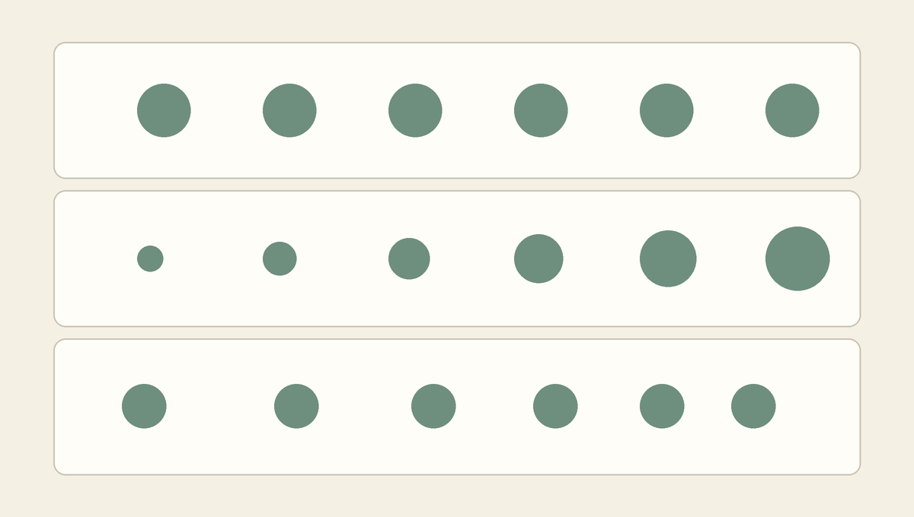
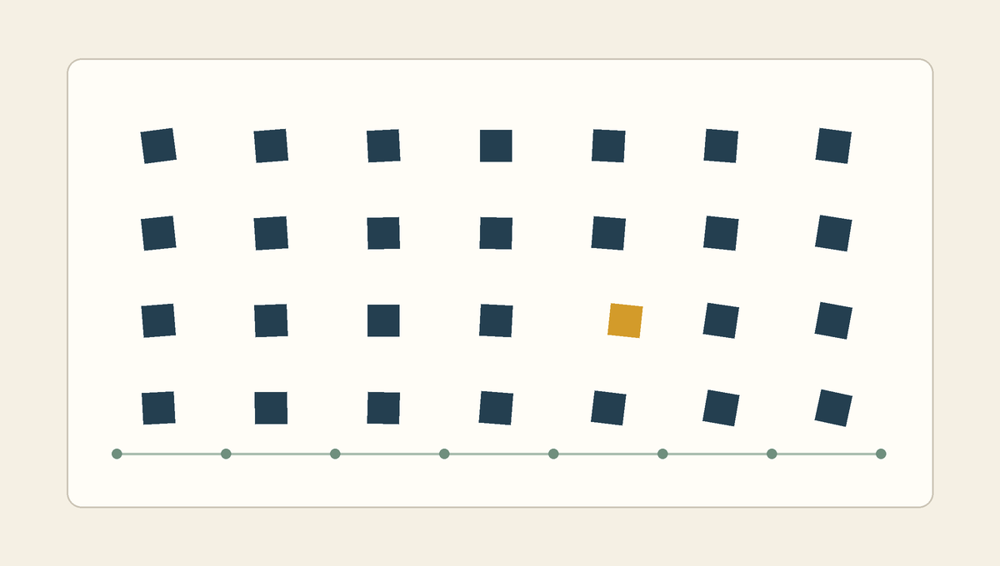
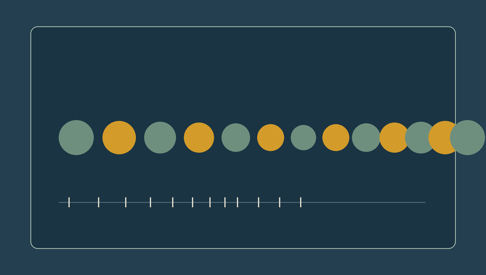
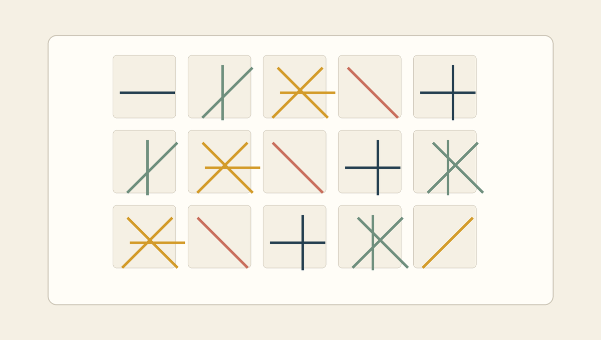

하나의 형태를 실행 가능한 시각 규칙으로 바꾸기
- 핵심 질문
- 같은 도형은 언제 리듬이 되는가?
- 문법
for,range(), 콜론, 들여쓰기- 운영
- 기본 50분 / 확장 60분, + 10 MIN EXTENSION
오늘의 학습 목표
- 반복 단위, 간격, 변화의 관계로 패턴과 시각적 리듬을 설명할 수 있습니다.
- 도형 명령을 직접 여러 번 작성하는 방식과 반복문으로 작성하는 방식의 차이를 설명할 수 있습니다.
for i in range(...):를 말로 풀어 읽고, 콜론과 들여쓰기의 역할을 구분할 수 있습니다.range()가 만드는 정수의 순서를 실행 전에 예측할 수 있습니다.- 반복 변수
i를 x좌표, 크기, 간격과 연결해 결과의 변화를 예상할 수 있습니다. - 반복 코드의 대표 오류를 오류 메시지와 코드 구조를 연결해 점검할 수 있습니다.
- 0-5 min3주차 연결
좌표, RGB, 도형 명령을 회상하고 수동 반복의 불편을 찾습니다.
- 5-17 min반복과 시각적 리듬
핵심 용어와 세 공식 사례를 입력·규칙·출력으로 분석합니다.
- 17-28 minfor 문장 읽기
반복문의 다섯 조각과 코드 블록의 경계를 이해합니다.
- 28-38 minrange 추적
시작값, 끝값, 간격을 표로 추적하고 반복 횟수를 계산합니다.
- 38-46 min숫자에서 화면으로
반복 변수를 위치, 크기, 간격에 연결해 결과를 예측합니다.
- 46-50 min개념 확인
오류 사례와 출구 질문으로 핵심 원리를 정리합니다.
수업 운영: 기본 50분과 확장 60분
기본 50분에서는 3주차 연결, 세 사례, for와 range(), 위치·크기 변화, 개념 확인까지 진행합니다. 사례 토론이나 코드 추적이 빠르게 끝난 경우에만 본문 마지막의 50-60분 확장으로 이동합니다. 확장 활동은 새로운 문법을 추가하지 않고 같은 반복 구조에서 간격과 크기만 바꾸어 세 결과를 비교합니다.
코드를 처음 보는 학생을 위한 읽기 순서
- 결과를 먼저 말합니다. 무엇을 몇 번 그리려는 코드인지 한 문장으로 확인합니다.
- 반복되는 한 줄을 찾습니다. 이번 시간에는
draw.ellipse()가 반복 대상입니다. - 달라지는 숫자를 찾습니다. 같은 도형 가운데 x좌표처럼 매번 바뀌는 값에 표시합니다.
- 반복 변수의 값을 표에 적습니다. 머릿속으로 건너뛰지 않고 0, 1, 2처럼 한 번씩 추적합니다.
- 한 번의 실행을 확인한 뒤 전체를 봅니다. 반복문도 결국 들여쓴 문장을 여러 번 실행하는 구조입니다.
0-5분 · 3주차의 한 도형에서 출발하기
3주차에는 좌표로 위치를 정하고, RGB 값으로 색을 정한 뒤, Pillow의 도형 명령으로 이미지에 픽셀을 기록했습니다. 예를 들어 아래 한 줄은 경계 상자 (80, 220, 150, 290) 안에 타원을 그립니다.
draw.ellipse((80, 220, 150, 290), fill=(42, 104, 124))같은 크기의 원을 가로로 다섯 개 배치하려면 x좌표만 조금씩 바꾼 명령을 다섯 번 작성할 수 있습니다. 이 코드는 틀리지 않으며, 3주차에 배운 내용만으로도 정확히 실행됩니다.
draw.ellipse((80, 220, 150, 290), fill=(42, 104, 124))
draw.ellipse((190, 220, 260, 290), fill=(42, 104, 124))
draw.ellipse((300, 220, 370, 290), fill=(42, 104, 124))
draw.ellipse((410, 220, 480, 290), fill=(42, 104, 124))
draw.ellipse((520, 220, 590, 290), fill=(42, 104, 124))이 방식을 수동 반복이라고 부르겠습니다. 다섯 줄은 같은 출력, 즉 원 다섯 개를 만들 수 있습니다. 그러나 원을 스무 개로 늘리거나 간격을 바꿀 때에는 여러 줄을 다시 계산해야 합니다. 한 줄에서 좌표를 잘못 바꾸면 규칙에서 벗어난 원도 생깁니다. 반복문은 이미 가능한 일을 새롭게 발명하는 기능이 아니라, 반복되는 구조와 달라지는 값을 분리해 기록하는 방법입니다.
5 commands
각 도형의 좌표를 직접 작성합니다. 작은 구성을 빠르게 시험할 때는 명확하지만 개수가 늘수록 수정 지점도 늘어납니다.
1 rule × 5
반복할 명령은 한 번 적고, 위치를 만드는 규칙과 횟수를 분리합니다. 개수와 간격을 한곳에서 조정할 수 있습니다.
다섯 줄에서 같은 부분과 다른 부분 찾기
위의 수동 반복 코드에서 모든 줄에 그대로 남아 있는 부분에 밑줄을 긋고, 매번 달라지는 네 숫자에 동그라미를 표시합니다. 달라지는 숫자 사이의 간격도 계산합니다.
관찰 결과 확인
draw.ellipse, y좌표 220과 290, 색상 값은 같습니다. 왼쪽과 오른쪽 x좌표는 매번 110씩 커집니다. 따라서 “같은 크기와 색의 원을 x방향으로 110픽셀 간격을 두고 다섯 번 그린다”라는 하나의 규칙으로 압축할 수 있습니다.
5-17분 · 반복, 패턴, 리듬을 구분하기
반복되는 요소가 있다고 해서 모든 화면이 같은 리듬을 갖는 것은 아닙니다. 무엇을 반복하는지, 요소 사이의 간격이 어떤지, 반복 과정에서 무엇이 변하는지에 따라 화면의 속도감과 긴장감이 달라집니다. 이번 수업에서는 다음 네 용어를 구분해 사용합니다.
| 용어 | 뜻 | 확인 질문 |
|---|---|---|
| 반복 단위 | 다시 나타나는 최소 요소 또는 명령 | 무엇이 되풀이되는가? |
| 반복 | 같은 단위나 동작을 두 번 이상 다시 사용하는 행위 | 몇 번 되풀이되는가? |
| 패턴 | 반복 단위와 변화가 알아볼 수 있는 규칙으로 조직된 구조 | 다음 요소를 어느 정도 예측할 수 있는가? |
| 리듬 | 요소와 빈 공간이 이어지며 눈의 이동 속도와 강조를 만드는 관계 | 시선은 어디에서 빨라지고 멈추는가? |
음악의 리듬이 소리와 침묵의 시간적 배열에서 생기듯, 시각적 리듬은 형태와 빈 공간의 배열에서 생깁니다. 간격이 일정하면 안정적이고 예측 가능한 흐름이 만들어집니다. 간격이 점차 좁아지면 시선이 가속되는 듯한 인상을 줄 수 있습니다. 같은 흐름 안에서 한 요소만 색이나 방향이 달라지면 그 위치가 강조점이 됩니다.

공식 사례: 반복은 복제가 아니라 선택의 체계다
아래 구조도는 원작 이미지를 복제한 자료가 아닙니다. 각 작가가 반복 단위와 규칙을 어떤 방식으로 조직했는지 수업용으로 단순화한 개념도입니다. 실제 작품과 정확한 제작 맥락은 카드의 공식 기관 페이지에서 확인합니다.

Vera Molnár, 규칙과 변주의 작업 ↗
몰나르는 단순한 기하학적 요소를 체계적으로 반복하고, 제한된 범위의 이동이나 변형을 더해 질서와 어긋남을 함께 탐구했습니다. 코드는 손으로 모두 계산하기 어려운 많은 변주를 시험하는 도구가 되었습니다.
- 입력
- 사각형, 위치, 회전과 같은 기본 요소
- 규칙
- 격자에 반복하고 일부 매개변수를 제한적으로 변화
- 출력
- 질서 안의 미세한 차이가 드러나는 이미지

Bridget Riley, 반복과 지각의 회화 ↗
라일리의 작업에서는 단순한 형태와 대비, 간격의 정교한 배열이 화면을 실제로 움직이지 않으면서도 진동하거나 흐르는 듯한 지각을 만듭니다. 빈 공간도 반복 단위만큼 중요한 설계 요소입니다.
- 입력
- 선, 원, 대비되는 색과 빈 공간
- 규칙
- 형태의 간격과 방향을 일정하거나 점진적으로 변화
- 출력
- 시선의 속도와 움직임을 유도하는 평면

Sol LeWitt, Untitled from Squares with a Different Line Direction in Each Half Square ↗
이 작품은 1971년에 제작된 열 점의 에칭 포트폴리오 가운데 한 점입니다. 르윗은 단순한 선과 정사각형을 기본 어휘로 삼고, 두 판을 회전하거나 겹쳐 찍는 체계를 통해 여러 구성을 만들었습니다.
- 입력
- 두 부분으로 나눈 정사각형과 서로 다른 방향의 선
- 규칙
- 두 에칭 판을 회전하고 겹쳐 찍어 구성을 변주
- 출력
- 하나의 체계에서 파생된 열 점의 에칭 포트폴리오
세 사례 가운데 하나를 규칙 문장으로 바꾸기
- 반복되는 최소 단위를 한 단어로 적습니다.
- 고정되는 속성과 변하는 속성을 각각 하나 적습니다.
- “________을/를 ________ 간격으로 반복하고, ________을/를 변화시킨다”라는 문장을 완성합니다.
사례 분석 문장 예시
라일리 사례는 “단순한 형태를 반복하고, 형태 사이의 간격을 점차 좁힌다”라고 정리할 수 있습니다. 몰나르 사례는 “사각형을 격자에 반복하고, 위치나 회전을 제한된 범위에서 변화시킨다”라고 정리할 수 있습니다. 중요한 것은 작품의 느낌만 적는 것이 아니라 어떤 요소와 규칙이 그 느낌을 만들었는지 연결하는 것입니다.
17-28분 · for 문장은 반복할 범위를 선언한다
Python의 반복문은 “이 값을 범위에서 하나씩 꺼내며, 들여쓴 문장을 실행한다”라고 읽습니다. 가장 짧은 예부터 살펴봅니다.
for i in range(5):
print(i)이 코드는 print(i)를 다섯 번 실행합니다. 한 번 실행할 때마다 i에 0, 1, 2, 3, 4가 차례대로 연결되므로 출력도 다섯 줄이 됩니다.
0
1
2
3
4| 코드 조각 | 역할 | 말로 읽기 |
|---|---|---|
for | 반복을 시작하는 Python 예약어 | 다음 값을 하나씩 사용하며 반복한다 |
i | 반복 변수 | 이번 반복에서 사용할 값을 잠시 기억하는 이름 |
in | 값을 가져올 대상을 연결하는 예약어 | 오른쪽의 순서 안에서 |
range(5) | 0부터 4까지의 정수를 차례대로 제공 | 다섯 번 반복할 수 있는 수의 범위 |
: | 반복할 코드 블록의 시작 표시 | 이제 아래의 들여쓴 문장이 반복된다 |
반복 변수 i는 상수처럼 하나의 값만 계속 기억하지 않습니다. 반복할 때마다 매번 새로운 값을 받아 현재 차례를 나타냅니다. 첫 실행에서는 0, 다음 실행에서는 1이 됩니다. i는 Python이 정한 필수 이름이 아니므로 step이나 circle_number처럼 바꿀 수 있지만, 짧은 숫자 반복에서는 관례적으로 i를 자주 사용합니다.
콜론과 들여쓰기는 코드 블록의 경계다
for 줄 끝의 콜론 :은 반복할 코드가 아래에 이어진다는 표시입니다. 다음 줄 앞의 들여쓰기는 실제로 반복되는 문장의 범위를 나타냅니다. 보기 좋게 정렬하는 장식이 아니라 Python 문법의 일부입니다.
for i in range(3):
print("원", i)들여쓴 출력 명령은 세 번 실행됩니다.
for i in range(3):
print("원", i)
print("완료")들여쓰기가 없는 마지막 줄은 반복이 끝난 뒤 한 번만 실행됩니다.
빈칸의 개수보다 같은 깊이가 중요하다
이 수업의 예제는 스페이스 네 칸으로 들여씁니다. 반복 안에서 같은 수준으로 실행할 문장은 같은 깊이에 맞춥니다. Colab이 자동으로 만든 들여쓰기를 유지하고, 탭과 스페이스를 임의로 섞지 않습니다.
어떤 문장이 몇 번 실행되는가?
print("원", i)는 range(3)의 값 0, 1, 2마다 한 번씩 모두 세 번 실행됩니다. print("완료")는 들여쓰기 밖에 있으므로 반복이 끝난 뒤 한 번만 실행됩니다. 화면에는 원 0, 원 1, 원 2, 완료가 순서대로 나타납니다.
28-38분 · range의 값과 반복 횟수를 표로 추적하기
range()는 정수의 순서를 만듭니다. 가장 중요한 규칙은 끝값을 포함하지 않는다는 점입니다. range(5)를 “0부터 5까지”라고 읽으면 여섯 개로 잘못 셀 수 있습니다. 정확한 값은 0부터 5 직전인 4까지입니다.
| 코드 | 실제로 나오는 값 | 반복 횟수 | 읽는 방법 |
|---|---|---|---|
range(5) | 0, 1, 2, 3, 4 | 5회 | 0부터 5 직전까지 1씩 증가 |
range(2, 7) | 2, 3, 4, 5, 6 | 5회 | 2부터 7 직전까지 1씩 증가 |
range(0, 10, 2) | 0, 2, 4, 6, 8 | 5회 | 0부터 10 직전까지 2씩 증가 |
range(4, 0, -1) | 4, 3, 2, 1 | 4회 | 4부터 0 직전까지 1씩 감소 |
range(시작값, 끝값, 증가값)처럼 최대 세 값을 사용할 수 있습니다. 한 값만 적으면 시작값은 0, 증가값은 1로 정해집니다. 이번 주 실습에서는 먼저 range(개수)를 사용하고, 간격은 좌표 계산식에서 조정합니다. 여러 문법을 동시에 바꾸지 않아야 결과의 원인을 확인하기 쉽습니다.
반복 한 번마다 상태가 어떻게 달라지는가
| 실행 차례 | i의 값 | 실행되는 문장 | 출력 |
|---|---|---|---|
| 1 | 0 | print(i) | 0 |
| 2 | 1 | print(i) | 1 |
| 3 | 2 | print(i) | 2 |
| 4 | 3 | print(i) | 3 |
| 5 | 4 | print(i) | 4 |
| 종료 | 다음 값 없음 | 들여쓴 문장을 더 실행하지 않음 | 변화 없음 |
실행하지 않고 출력 적기
for step in range(1, 6):
print(step * 10)step이 받는 값을 먼저 적은 다음, 각 값에 10을 곱한 출력을 한 줄씩 작성합니다.
출력과 반복 횟수 확인
range(1, 6)은 1, 2, 3, 4, 5를 만들므로 다섯 번 반복합니다. 출력은 10, 20, 30, 40, 50입니다. 끝값 6은 포함되지 않지만 마지막으로 원하는 값 5는 포함됩니다.
range(1, 5)는 1부터 5까지가 아니다
range(1, 5)의 값은 1, 2, 3, 4입니다. 1부터 5까지 사용하려면 끝값을 하나 더 큰 6으로 적어 range(1, 6)을 사용합니다. 이 규칙은 다음 교시의 리스트 인덱스와 연결됩니다.
38-46분 · 반복 숫자를 시각 요소에 연결하기
이제 i를 화면의 값에 연결합니다. 3주차에는 원 하나의 x좌표를 직접 정했습니다. 이번에는 시작 위치 100에 i * 110을 더해 매번 새로운 x좌표를 계산합니다.
for i in range(6):
x = 100 + i * 110
draw.ellipse((x, 220, x + 70, 290), fill=(42, 104, 124))이 코드는 이미 그린 원을 오른쪽으로 이동시키지 않습니다. 반복할 때마다 새로운 x좌표를 계산하고, 그 위치에 새로운 원을 하나씩 그립니다. 첫 반복에서 i = 0이므로 x는 100입니다. 다음 반복에서 i = 1이므로 x는 210입니다. 여섯 번의 반복은 서로 다른 x좌표에서 여섯 번의 그리기 명령을 실행합니다.
i | i * 110 | x = 100 + i * 110 | 원 경계의 x 범위 |
|---|---|---|---|
| 0 | 0 | 100 | 100~170 |
| 1 | 110 | 210 | 210~280 |
| 2 | 220 | 320 | 320~390 |
| 3 | 330 | 430 | 430~500 |
| 4 | 440 | 540 | 540~610 |
| 5 | 550 | 650 | 650~720 |
같은 반복문에서 무엇을 바꿀 수 있는가
| 목표 | 핵심 계산 | 예상되는 결과 |
|---|---|---|
| 일정한 위치 반복 | x = 100 + i * 110 | 같은 크기의 원이 일정한 간격으로 배열됨 |
| 점진적인 크기 변화 | size = 30 + i * 10 | 오른쪽으로 갈수록 원이 10픽셀씩 커짐 |
| 점진적인 간격 변화 | x = 100 + i * i * 18 | 오른쪽으로 갈수록 원 사이의 거리가 빠르게 넓어짐 |
위 세 사례에서 for 문법은 같습니다. 달라지는 것은 반복 변수를 어떤 계산식에 연결하는가입니다. 따라서 시각 결과를 설명할 때 “반복문을 사용했다”에서 멈추지 않고, 반복 변수를 x좌표에 연결해 일정한 간격을 만들었다처럼 코드와 화면을 함께 말해야 합니다.
i가 3일 때 세 계산의 값은?
x = 100 + i * 110은 430, size = 30 + i * 10은 60, x = 100 + i * i * 18은 262입니다. 계산 순서에 따라 곱셈을 먼저 하고 덧셈을 나중에 합니다. 숫자를 직접 대입해 보면 코드가 화면의 어느 속성을 바꾸는지 확인할 수 있습니다.
46-50분 · 오류를 읽고 핵심 개념 확인하기
| 보이는 문제 | 가능한 원인 | 먼저 확인할 위치 |
|---|---|---|
SyntaxError | for 줄 끝의 콜론이 없음 | range(...):의 마지막 문자 |
IndentationError | 반복할 문장이 들여쓰기되지 않았거나 깊이가 섞임 | for 바로 다음 줄의 앞쪽 공백 |
| 원 하나만 보임 | x좌표가 i와 연결되지 않아 같은 자리에 겹쳐 그림 | x = start_x + i * gap 계산 |
| 원 일부가 잘림 | 마지막 원의 오른쪽 좌표가 캔버스 너비를 벗어남 | x + size와 canvas_width 비교 |
세 문장으로 오늘의 원리 설명하기
range(4)가 만드는 값을 모두 적습니다.- 반복문에서 콜론과 들여쓰기가 각각 무엇을 나타내는지 한 문장으로 적습니다.
x = 60 + i * 80에서i가 0, 1, 2일 때 x좌표를 적습니다.
출구 확인 기준 답안
range(4)는 0, 1, 2, 3을 만듭니다. 콜론은 아래에 코드 블록이 시작됨을 표시하고, 들여쓰기는 실제로 반복할 문장의 범위를 나타냅니다. x좌표는 60, 140, 220입니다.
수업 후 개별 복습
수업 중 시간이 부족하면 아래 문항은 정답을 펼치지 않고 표시만 남긴 뒤 개별 복습에 사용합니다. 각 답에는 결과만 쓰지 말고 range()의 실제 값이나 좌표 계산을 함께 기록합니다.
1. range(3, 8)은 어떤 값을 만들며 몇 번 반복하는가?
3, 4, 5, 6, 7을 만들고 다섯 번 반복합니다. 끝값 8은 포함하지 않습니다.
2. 같은 좌표에 원을 여섯 번 그리면 화면에는 몇 개로 보이는가?
명령은 여섯 번 실행되지만 같은 색과 크기의 원이 정확히 겹치면 화면에는 원 하나처럼 보입니다. 반복 횟수와 눈에 구분되는 형태의 수는 항상 같지 않습니다.
3. 간격을 90에서 60으로 줄이면 리듬은 어떻게 달라지는가?
원 중심 사이의 거리가 줄어 화면이 더 조밀해집니다. 같은 캔버스에서 더 많은 요소를 넣을 수 있지만, 원의 크기가 그대로라면 서로 겹칠 가능성도 커집니다.
4. for 줄과 들여쓴 줄을 각각 한 문장으로 읽는다면?
“range()에서 값을 하나씩 꺼내 반복 변수에 기억한다. 각 값마다 들여쓴 도형 명령을 실행한다”라고 읽을 수 있습니다.
50-60분 · 세 가지 리듬을 같은 구조로 비교하기
확장 시간에는 새 문법을 배우지 않습니다. 반복 횟수와 색은 여섯 번, 한 가지 색으로 고정하고 크기와 간격 계산만 바꾸어 결과의 차이를 예측합니다. 코드를 실행할 수 있는 환경이라면 각 사례를 차례로 확인하고, 강의실 상황상 실행하지 않는 경우에는 표를 손으로 완성합니다.
| 시간 | 활동 | 남겨야 할 결과 |
|---|---|---|
| 50-52분 | 일정한 반복, 크기 변화, 간격 변화의 결과를 먼저 예측 | 세 줄의 예상 스케치 |
| 52-56분 | 각 계산식에 i = 0, 1, 2를 대입 | 초기 세 값의 계산표 |
| 56-59분 | 제공된 시각 자료와 예측을 비교 | 일치한 점과 달랐던 점 |
| 59-60분 | 가장 적합한 규칙 하나를 선택 | 선택 이유 한 문장 |
1교시 핵심 문장
반복문은 같은 명령을 줄이는 문법이면서, 반복 횟수와 시각 매개변수의 관계를 명시하는 설계 도구입니다.
2교시 예고
한 줄의 원에는 하나의 반복 변수만으로 충분했습니다. 여러 색을 순서대로 사용하고 가로와 세로 방향을 함께 반복하려면 값의 묶음과 두 겹의 반복 구조가 필요합니다. 다음 교시에는 리스트로 색을 모으고, 중첩 반복으로 격자를 만듭니다.
참고 자료
- Python 공식 튜토리얼: for Statements와 range()시퀀스의 항목을 순서대로 반복하는 for 문장과 끝값을 포함하지 않는 range의 공식 설명
- Pillow 공식 문서: ImageDraw좌표, 내부색, 타원과 기타 도형 명령의 공식 사용법
- La Biennale di Venezia: Vera Molnár기하학적 형태와 컴퓨터 기반 체계를 탐구한 작가의 공식 기관 소개
- Bridget Riley Art Foundation: Catalogue Raisonné초기 흑백 작업과 반복 구조를 확인할 수 있는 공식 디지털 카탈로그
- MoMA: Sol LeWitt, Untitled from Squares with a Different Line Direction in Each Half Square두 에칭 판의 회전과 겹침을 체계적으로 변주한 1971년 작품의 공식 소장품 기록